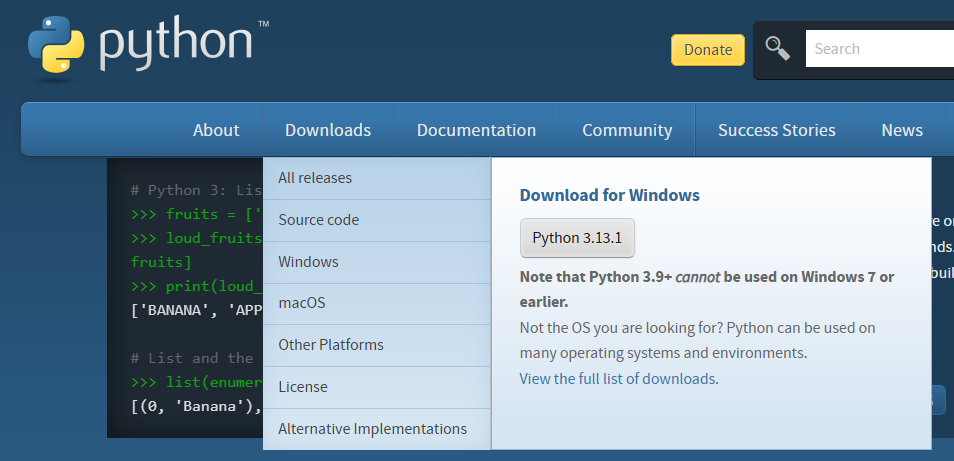
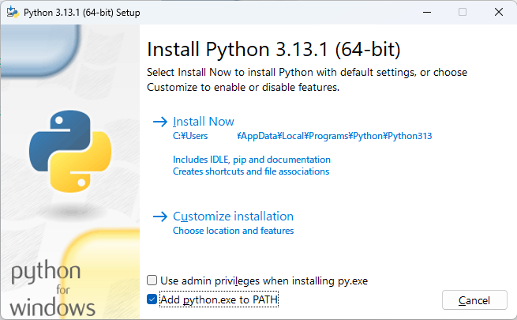
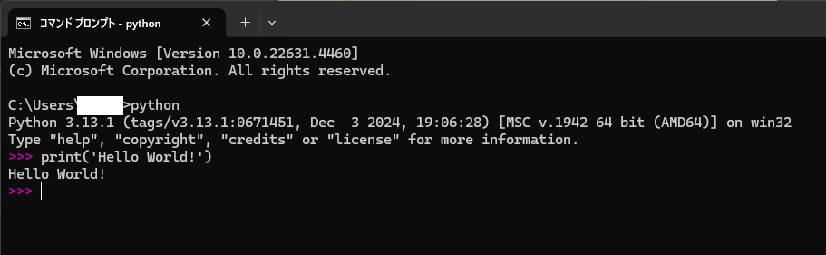

第1章
インストール
Pythonの環境構築を行います。
1.1 Pythonのインストール
すでにPythonの環境がある方は第2章「チュートリアル」に進んでください。
はじめに、Pythonの公式サイト(https://www.python.org/)にアクセスしてください。
公式サイトの上部のメニューにDownloadsという項目があるので、そこにカーソルを合わせると図1.1のようにDownload for Windowsというメニューが表示されます。メニューのPython 3.13.1と書かれたボタンを押して、インストーラーをダウンロードしてください。

図1.1: pythonのダウンロード
インストーラーを起動すると、図1.2のようなウィンドウが表示されます。ここで、下部のAdd python.exe to PATHに必ずチェックを入れてください。チェックを入れないと、Pythonを実行することができません。(ものすごく面倒な設定をすることになります)
チェックを入れたら、Install Nowを押してPythonをインストールします。

図1.2: インストーラー
インストールが完了すると、様々なリンクやボタンが表示されたウィンドウが出ますが、それらは全て無視してCloseボタンを押してください。
1.2 Pythonの動作確認
Windowsの検索ボックスにcmdと入力して、コマンドプロンプトを起動します。
コマンドプロンプトを起動したら、リスト1.1のように入力し、pythonを実行します。
リスト1.1: リスト1.1: pythonの実行
$ C:\Users\username> python
実行すると図1.3のように、対話モードと呼ばれるものが起動します。試しにprint('Hello World!')を実行して、動作を確認しましょう、

図1.3: Pythonの対話モード
これでインストールは終わりです。